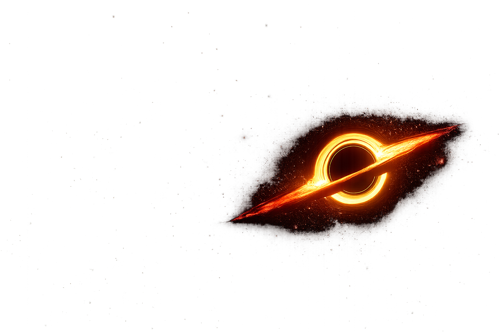

Where gravity overcomes light and spacetime reveals its deepest mysteries.
ORIGIN: COLLAPSE OF A MASSIVE STAR
Black holes are remnants of massive stars that collapsed under their own gravity. At the center lies the singularity, where the laws of physics as we know them cease to function.

Beyond this boundary, not even light can escape.
A surface where gravity becomes intense enough to trap light.
The Schwarzschild radius determines the limit for a body to become a black hole.
A region where photons can orbit the black hole before falling in..
Theoretical Hypothesis
Wormholes are theoretical shortcuts in spacetime, connecting distant regions of the universe — or even different dimensions.
Some theories suggest they may connect a black hole to a white hole.
Want to know all about astrophysics involving black holes?
Sign up now!